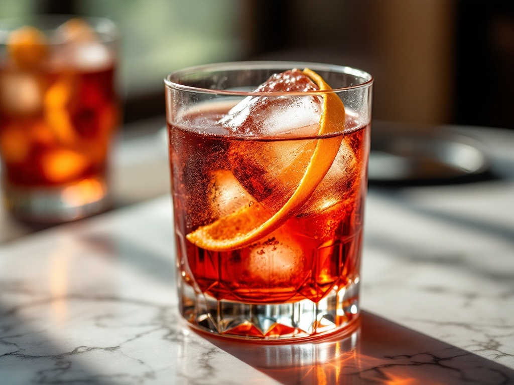
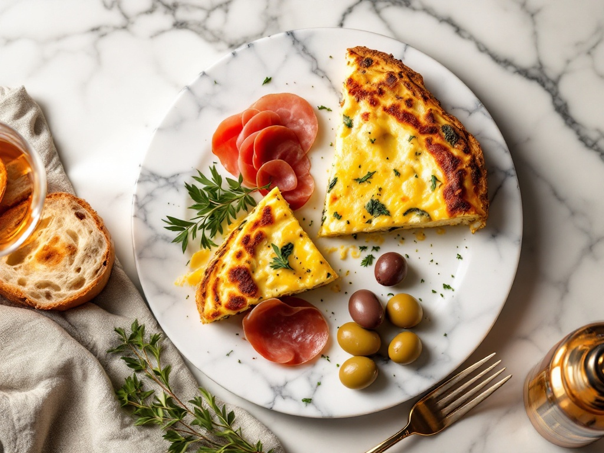
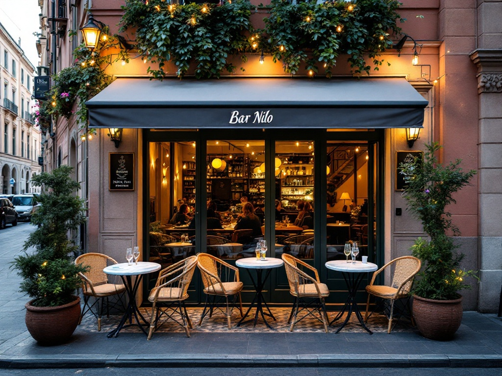

Il classico
Negroni di casa
Gin, vermouth rosso e bitter in parti uguali, mescolato su ghiaccio grande e scorza d'arancia. Amaro, secco, pensato per durare.
Ogni sera, quando la luce di Milano si fa ambrata.
Spritz amari, Negroni al bancone e un piatto caldo che cambia ogni giorno. Milano beve così, al tramonto.
Chiama per prenotare Prenota un tavolo in terrazzaCosa significa aperitivo qui
A Milano l'aperitivo è spesso una corsa: un cocktail annacquato e un buffet di pasta fredda. Da Bar Nilo lo trattiamo per quello che è — il momento in cui la giornata rallenta. Si arriva alle sei, si appoggia il gomito sul marmo freddo, e si comincia dall'amaro.
La nostra lista è costruita attorno a bitter e vermouth: pochi, scelti, spiegati. Le guarnizioni sono fatte in casa, il ghiaccio è tagliato grande perché duri. Nessuna fretta di farti bere in fretta: qui si resta.
È aperitivo come mestiere, non come formula. Ed è la differenza che si sente al primo sorso.
La sala & il marmo
Un vero bancone in marmo, freddo sotto il bicchiere — non un vassoio di plastica.
Posti tra bancone e sala. Piccolo di proposito: qui ci si conosce.
Scaffali verde petrolio e luce ambrata: la sera comincia già dall'ambiente.
I signature
I nostri drink d'autore, versati al bancone. Sotto, la lista completa da consultare — questi tre sono il punto di partenza consigliato.

Gin, vermouth rosso e bitter in parti uguali, mescolato su ghiaccio grande e scorza d'arancia. Amaro, secco, pensato per durare.
La nostra versione più amara del rito milanese: bitter, bollicine e oliva verde. Arancia ambrata controluce.
Vermouth serviti lisci, in calice, con una scorza — il modo più semplice per capire la nostra lista di amari.
La cucina del giorno

Un piccolo piatto caldo incluso nel rito dell'aperitivo, deciso ogni mattina secondo il mercato. Non un buffet da riempire il piatto: una cosa fatta bene. Gli esempi qui sopra ruotano — il piatto esatto lo scoprite al bancone.
Dehors & prenotazioni

Il bancone è per chi passa e resta in piedi. La terrazza è per la sera lunga: piccoli gruppi, un tavolo di marmo, un aperitivo che diventa cena senza fretta.
Le persone
Chi ha voluto un bar dove l'aperitivo tornasse a essere una cosa curata. Sceglie le bottiglie, decide il piatto del giorno, e la sera è quasi sempre in sala.
Mescola il Negroni nel mixing glass, taglia il ghiaccio grande, prepara le guarnizioni di casa. È il mestiere che giustifica ogni sorso: niente shaker per finta, niente scorciatoie.
Milano, intorno
Siamo una tappa di quartiere: una via di Milano nell'ora dorata, la gente che rientra dal lavoro e si ferma per il primo bicchiere prima di cena.
Bar Nilo — Milano
Nel cuore del quartiere, a pochi minuti dai mezzi. Indicazioni esatte alla chiamata o sulla mappa.
Cosa dicono a Milano
207 giudizi, una media di 4,3 che tiene nel tempo: chi entra per un bicchiere torna per il rito. La distribuzione qui accanto è una lettura indicativa di quel 4,3 complessivo.
Prima di venire